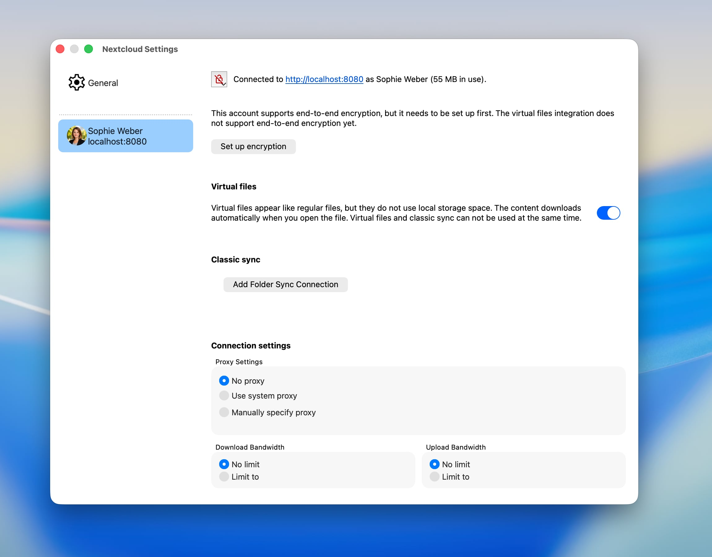
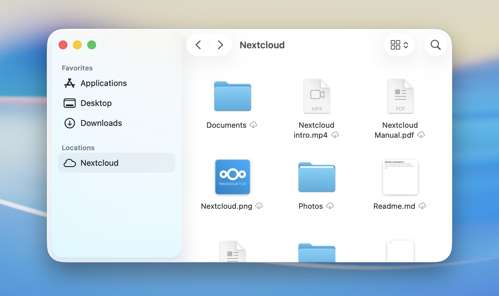

Verwendung des macOS-Dateianbieters
Unter macOS kann unser Client Nextcloud-Dateien außerdem als File-Provider-Erweiterung nahtlos in macOS integrieren. Bei jedem neu eingerichteten Nextcloud-Konto ist die Integration standardmäßig aktiviert.
Unterstützte Funktionen
Dateien oder ganze Ordner offline verfügbar halten
Freigeben von lokalem Speicherplatz durch Entfernen lokaler Kopien, ohne Elemente zu löschen
Intelligente und automatische lokale Datenlöschung
Dateivorschauen im Finder für Dateien, die noch nicht heruntergeladen wurden
Unterstützung für Apple-spezifische Formate, zum Beispiel Pages-, Numbers- oder Keynote-Pakete
Unterstützung für serverseitiges Sperren von Dateien (sofern vom verbundenen Server unterstützt)
Unterstützung für „Lokal bearbeiten“
Mit anderen Benutzern teilen
Serverseitige Aktionen direkt im Kontextmenü des Finders
Automatische Erkennung serverseitiger Änderungen
Konfiguration
Einstellungen zur File-Provider-Erweiterung können pro Konto im Einstellungsfenster des Nextcloud-Desktop-Clients angepasst werden.


Hier kann die Integration in den Finder aktiviert oder deaktiviert werden.
Wenn Sie die File-Provider-Erweiterung deaktivieren, während noch nicht synchronisierte Änderungen vorhanden sind, speichert macOS die nicht synchronisierten Elemente in einem Ordner, der nach dem Deaktivieren der Integration automatisch angezeigt wird.
Finder-Integration
Unter macOS erscheint entfernter Speicher wie ein Nextcloud-Dateikonto als eigener Ort in der Finder-Seitenleiste. Der tatsächliche Speicherort der Inhalte auf dem Datenträger wird von macOS festgelegt.


Bemerkung
Um die Erkennung serverseitiger Änderungen zu beschleunigen, empfehlen wir, die App notify_push auf Ihrem Nextcloud-Server zu aktivieren. Diese App benachrichtigt den Desktop-Client sofort über Änderungen auf dem Server und verkürzt so die Zeit, bis Änderungen im Finder erscheinen. Andernfalls muss der Client den Server regelmäßig abfragen, was zu einer größeren Verzögerung zwischen einer Änderung auf dem Server und ihrer lokalen Sichtbarkeit führt.
Sync-Statusanzeigen
Ähnlich wie bei klassischen Synchronisierungsordnern zeigt der Finder Statusanzeigen neben den Elementen an. Anders als die eigenen Anzeigen klassischer Synchronisierungsordner werden diese standardisierten Anzeigen von macOS bereitgestellt, um ein einheitliches Erscheinungsbild über alle Cloud-Speicher-Apps hinweg zu gewährleisten, die auf einem System verwendet werden.
Wolke mit Pfeil nach unten: Das Element und seine untergeordneten Elemente sind noch nicht heruntergeladen. Sie können heruntergeladen werden, sofern eine Netzwerkverbindung besteht.
Umrandete Wolke: Das Element ist in seinem aktuellen lokalen Zustand noch nicht vollständig hochgeladen.
Durchgestrichene Wolke: Das Element ist von der Synchronisierung ausgeschlossen.
Kreisdiagramm: Das Element wird gerade hoch- oder heruntergeladen, und der Fortschritt wird angezeigt.
Gefüllter Kreis mit Stecknadel: Das Element ist offline verfügbar und wird lokal behalten.
Kein Symbol: Das Element ist offline verfügbar und aktuell.


Bekannte Probleme
Konflikt mit macOS-Erweiterungen
Aufgrund technischer Einschränkungen von macOS, die von Apple vorgegeben werden, kann die Finder-Integration für klassische Synchronisierungsordner nicht parallel zu einer aktivierten File-Provider-Erweiterung laufen. Das bedeutet, dass Elementkennzeichnungen und Kontextmenüoptionen für klassische Synchronisierungsordner nicht verfügbar sind, solange die File-Provider-Erweiterung aktiviert ist.
Alias-Dateien
Wenn Sie eine auf Nextcloud gespeicherte macOS-Aliasdatei zum ersten Mal auf einem Gerät öffnen, auf dem sie noch nicht heruntergeladen wurde, wird die Datei möglicherweise als Binärdokument in einem Texteditor geöffnet, statt zu ihrem Ziel zu springen. Das liegt daran, dass macOS entscheidet, wie eine Datei geöffnet wird, bevor sie heruntergeladen wird, und Aliasdateien auf dem Server keine erkennbare Dateiendung oder Typinformation haben – sie lassen sich nur anhand ihres Inhalts erkennen. Sobald die Datei einmal geöffnet oder heruntergeladen wurde, weiß Nextcloud Desktop, dass es sich um einen Alias handelt, und speichert diese Information lokal, sodass alle weiteren Öffnungsvorgänge korrekt funktionieren. Um das Problem ganz zu vermeiden, klicken Sie im Finder mit der rechten Maustaste auf die Aliasdatei und wählen Sie Geladen lassen, bevor Sie sie zum ersten Mal öffnen.
Lokal bearbeiten
Die Aktion Lokal bearbeiten der Nextcloud-Weboberfläche kann Dateien, die von der File-Provider-Erweiterung verwaltet werden, nicht öffnen. Sie kann sie nur im Finder anzeigen.
Dies ist eine Einschränkung von macOS selbst und kein Fehler des Clients. Zu Ihrem Schutz erlaubt macOS nur bestimmten Apps, eine Datei zu öffnen, und lässt nicht zu, dass sich eine App diese Berechtigung selbst erteilt. Der Teil des Clients, der diese Dateien verwalten darf, darf keine anderen Apps starten, und der Teil, der Ihren Editor starten könnte, darf die Datei nicht öffnen.
Das Gewähren von „Voller Festplattenzugriff“ hilft nicht, da ein anderer Teil des macOS-Sicherheitssystems dafür zuständig ist.
Fehlerbehebung
Protokollierung auf Debug-Ebene
Protokolleinträge auf Debug-Ebene für die File-Provider-Erweiterung sind standardmäßig deaktiviert. Wenn Sie ein Problem mit dem File Provider melden möchten, kann es hilfreich sein, diese zu aktivieren, um genauere Informationen darüber zu erhalten, was im Hintergrund geschieht. Um sie zu aktivieren, führen Sie im Terminal den folgenden Befehl aus:
defaults write com.nextcloud.desktopclient.FileProviderExt debugLoggingEnabled -bool YES
Die Änderung wird innerhalb weniger Sekunden wirksam; ein Neustart der Erweiterung oder des Macs ist nicht erforderlich. Es wird empfohlen, den Standardwert wiederherzustellen, indem Sie den explizit gesetzten Wert löschen, nachdem Sie das untersuchte Problem behoben haben:
defaults delete com.nextcloud.desktopclient.FileProviderExt debugLoggingEnabled